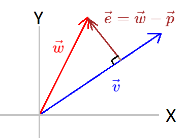

Topics
\(1.\) Vector Projection
\(2.\) Why are we doing projection?
\(3.\) Matrix Projection
\(\quad\bullet\) Projection on to the column space of a matrix
Projection
Vector Projection

Say that we have two vector \(\vec{v}\in\mathbb{R}^2\) and \(\vec{u}\in\mathbb{R}^2\).
Now in space of \(\vec{v}\) which vector is closest to \(\vec{w}\)?
But let's first ask what is the space of \(\vec{v}\)?
Now in space of \(\vec{v}\) which vector is closest to \(\vec{w}\)?
But let's first ask what is the space of \(\vec{v}\)?
We are asking for the space of a single vector, a single vector can only give us a space in \(\mathbb{R}\) which is a line.
So the span of \(\vec{v}\) is \(C\vec{v};\quad C\in\mathbb{R}\)
Now we have to find a vector closest to \(\vec{w}\) in the vector space of \(\vec{v}\).
Let's call this closest vector as \(\vec{p}\), this \(\vec{p}\) is the projection of \(\vec{w}\) on \(\vec{v}\).
We know that \(\vec{p}\) lives in the vector space of \(\vec{v}\).
So \(\vec{p}=x\vec{v};\quad x\in\mathbb{R}\).
\(\vec{p}\) is the closest vector to \(\vec{w}\) then the vector joining \(\vec{p}\) to \(\vec{w}\) is perpendicular to \(\vec{v}\).
Say the vector joining \(\vec{p}\) to \(\vec{w}\) be \(\vec{e}\), and \(\vec{e} = \vec{w}-\vec{p}\) So,
\(\vec{v}\cdot \vec{e} =0\)
\(\Rightarrow \vec{v}^T \vec{e} =0\)
\(\Rightarrow \vec{v}^T (\vec{w} -\vec{p})=0\)
\(\Rightarrow \vec{v}^T (\vec{w} -x\vec{v})=0\)
\(\Rightarrow \vec{v}^T \vec{w} -x\vec{v}^T\vec{v}=0\)
\[\Rightarrow x=\frac{\vec{v}^T \vec{w}}{\vec{v}^T\vec{v}} \in\mathbb{R}\] Projection of \(\vec{w}\) on \(\vec{v}\) is \(\vec{p}=\vec{v}x\)
Projection Matrix of a vector
Say we have a vector \(\vec{v}\in\mathbb{R}^n\) now we want a matrix that gives us projection of any vector onto this vector \(\vec{v}\), we call this matrix a projection matrix.Say this projected vector on \(\vec{v}\) be \(\vec{p}\).
As we discussed above,
\(\vec{p}=\vec{v}x\)
\(\displaystyle \Rightarrow \vec{p}= \vec{v} \frac{\vec{v}^T \vec{w}}{\vec{v}^T\vec{v}}\)
\(\displaystyle \Rightarrow \vec{p}= \frac{\vec{v} \vec{v}^T}{\vec{v}^T\vec{v}} \vec{w}\)
Projection matrix\((P)\) of a vector \(\vec{v}\) is
\[\displaystyle P=\frac{\vec{v} \vec{v}^T}{\vec{v}^T\vec{v}} \]
Column space of \(P\) is the vector space of \(\vec{v}\).
In \(P\vec{w}\) we are taking the linear combination of \(\vec{v}\) so the resultant projection of \(\vec{w}\) on \(\vec{v}\) lives in the vector space of \(\vec{v}\).
Rank of \(P\) is \(1\).
Because all the columns of \(P\) is the linear combination of a single vector \(\vec{v}\).
\(\displaystyle \Rightarrow P^T = \frac{(\vec{v} \vec{v}^T)^T}{\vec{v}^T\vec{v}} \)
\(\displaystyle \Rightarrow P^T = \frac{\vec{v}^{T^T} \vec{v}^T}{\vec{v}^T\vec{v}} \)
\(\displaystyle \Rightarrow P^T = \frac{\vec{v} \vec{v}^T}{\vec{v}^T\vec{v}} \)
So \(P\) is symmetric.
\[P=P^T\]
Let's say the projected vector be \(\vec{p}_1\).
If we again apply the projection on \(\vec{p}_1\) then it project the \(\vec{p_1}\) into the vector space of \(\vec{v}\).
But \(\vec{p}_1\) is already in vector space of \(\vec{v}\), so the second projection did nothing.
So we can say that
\[P^2=P\]
Why are we doing projection?
Ok we can find the projection of a vector on another vector, but why are we projecting the vector in the first place?What is the benefit of projecting a vector?
Say a function \(f=x_1 a+ x_2 b+ x_3 c\) is governed by 3 variables (say \(a,b,c\)) and we have \(5\) noisy observation of \(f\) now we want to predict \(f\) for some set of \((a,b,c)\).
Because our \(5\) observations are noisy so we can not perfectly predict the outcome.
Our observation is something like,
\(f_1=x_1 a_1+ x_2 b_1+ x_3 c_1\)
\(f_2=x_1 a_2+ x_2 b_2+ x_3 c_2\)
\(f_3=x_1 a_3+ x_2 b_3+ x_3 c_3\)
\(f_4=x_1 a_4+ x_2 b_4+ x_3 c_4\)
\(f_5=x_1 a_5+ x_2 b_5+ x_3 c_5\)
We can write it as,
\(\begin{bmatrix} a_1 & b_1 & c_1\\ a_2 & b_2 & c_2\\ a_3 & b_3 & c_3\\ a_4 & b_4 & c_4\\ a_5 & b_5 & c_5\\ \end{bmatrix} \begin{bmatrix} x_1\\ x_2\\ x_3\\ \end{bmatrix} = \begin{bmatrix} f_1\\ f_2\\ f_3\\ f_4\\ f_5\\ \end{bmatrix} \)
Here \(x_1 , x_2 , x_3\) are our parameters(unknown), so our parameter space is \(\mathbb{R}^5\).
We want to find a \(4\) dimensional plane that best fit our noisy data.
Say \(\begin{bmatrix} a_1 \\ a_2 \\ a_3 \\ a_4 \\ a_5 \\ \end{bmatrix} = \vec{a},\quad\) \(\begin{bmatrix} b_1 \\ b_2 \\ b_3 \\ b_4 \\ b_5 \\ \end{bmatrix} = \vec{b},\quad\) \(\begin{bmatrix} c_1 \\ c_2 \\ c_3 \\ c_4 \\ c_5 \\ \end{bmatrix} = \vec{c},\quad\) \(\begin{bmatrix} a_1 & b_1 & c_1\\ a_2 & b_2 & c_2\\ a_3 & b_3 & c_3\\ a_4 & b_4 & c_4\\ a_5 & b_5 & c_5\\ \end{bmatrix}= \mathbb{A}, \quad\) \(\begin{bmatrix} x_1\\ x_2\\ x_3\\ \end{bmatrix}=\mathbb{X},\quad\) and \(\begin{bmatrix} f_1\\ f_2\\ f_3\\ f_4\\ f_5\\ \end{bmatrix} =\mathbb{Y}\)
So \(\mathbb{A}\mathbb{X}=\mathbb{Y}\)
Our data is noisy.
\(\text{Rank}(\mathbb{A})\leq 3,\quad\) \(\mathbb{X}\in\mathbb{R}^3,\quad\) \(\mathbb{Y}\in\mathbb{R}^5\quad\).
So there are high chance that \(\mathbb{Y}\) does not lives in column space of \(\mathbb{A}\).
So instead we find the solution for \(\mathbb{A}\widehat{\mathbb{X}}=\widehat{\mathbb{Y}}\).
Where \(\widehat{\mathbb{Y}}\) lives in the column space of \(\mathbb{A}\) and \(\widehat{\mathbb{Y}}\) is closest to \(\mathbb{Y}\)
We can get this \(\widehat{\mathbb{Y}}\) by taking the projection of \(\mathbb{Y}\) onto the column space of \(\mathbb{A}\)
Matrix Projection
Say that we have a \(m\times n\) matrix \(\mathbb{A}\in\mathbb{R}^{m\times n}\) and a vector \(\vec{v}\in\mathbb{R}^n\).Then projection of a vector \(\vec{v}\) on a matrix \(\mathbb{A}\) generally means projection of \(\vec{v}\) on the column space of matrix \(\mathbb{A}\).
We can also take the projection of a vector \(\vec{v}\) on the null space of matrix \(\mathbb{A}^T\).
And as we know that null space of \(\mathbb{A}^T\) is perpendicular to the column space of \(\mathbb{A}\).
Then,
Projection of a vector \(\vec{v}\) on the,
null space of matrix \(\mathbb{A}^T\), and column space of matrix \(\mathbb{A}\) collectively gives us back our vector \(\vec{v}\)
Projection on to the column space of a matrix
Recall our previous example, here we have a system of equation \(\mathbb{A}\mathbb{X}=\mathbb{Y}\) where there is no solution.Here problem was that there are high chance that \(\mathbb{Y}\) does not lives in column space of \(\mathbb{A}\), So it does not have a solution.
So we go for the closest solution.
\(\mathbb{A}\widehat{\mathbb{X}}=\widehat{\mathbb{Y}}\)
where, \(\widehat{\mathbb{Y}}\) lives in the column space of \(\mathbb{A}\), so.
\(\widehat{\mathbb{Y}}\) is the linear combinations of the columns of \(\mathbb{A}\).(vector)\(\widehat{\mathbb{Y}}\) lives in the column space \(\mathbb{A}\) and (vector)\(\mathbb{Y}\) is at some angle to the column space of \(\mathbb{A}\), So
The vector \(\mathbb{Y} - \widehat{\mathbb{Y}}\) is perpendicular to the column space of \(\mathbb{A}\)\(\Rightarrow \mathbb{Y} - \widehat{\mathbb{Y}}\) is also perpendicular to the column vectors of \(\mathbb{A}\)
\(\Rightarrow \vec{a}^T (\mathbb{Y} - \widehat{\mathbb{Y}})=0\), \(\vec{b}^T (\mathbb{Y} - \widehat{\mathbb{Y}})=0\) and \(\vec{c}^T (\mathbb{Y} - \widehat{\mathbb{Y}})=0\) where \(\vec{a},\) \(\vec{b}\) and \(\vec{c}\) are the column vector of \(\mathbb{A}\).
We can write it as,
\[\mathbb{A}^T(\mathbb{Y} - \widehat{\mathbb{Y}})=0\]Notice that \(\mathbb{Y} - \widehat{\mathbb{Y}}\) lives in \((N(A^T))\)
So \(\mathbb{Y} - \widehat{\mathbb{Y}}\) is perpendicular to the column space of \(\mathbb{A}\).\(\mathbb{A}^T(\mathbb{Y} - \widehat{\mathbb{Y}})=0\) and \(\widehat{\mathbb{Y}}=\mathbb{A}\widehat{\mathbb{X}}\)
\(\Rightarrow \mathbb{A}^T(\mathbb{Y} - \mathbb{A}\widehat{\mathbb{X}})=0\)
\(\Rightarrow \mathbb{A}^T \mathbb{Y} - \mathbb{A}^T\mathbb{A}\widehat{\mathbb{X}}=0\)
\(\Rightarrow \mathbb{A}^T\mathbb{A}\widehat{\mathbb{X}}=\mathbb{A}^T \mathbb{Y}\)
\[\widehat{\mathbb{X}}=(\mathbb{A}^T\mathbb{A})^{-1}\mathbb{A}^T \mathbb{Y}\]Our projection of \(\mathbb{Y}\) on the columnn space of \(\mathbb{A}\) is \(\widehat{\mathbb{Y}}\) .
\(\widehat{\mathbb{Y}}=\mathbb{A}\widehat{\mathbb{X}}\) and \(\widehat{\mathbb{X}}=(\mathbb{A}^T\mathbb{A})^{-1}\mathbb{A}^T \mathbb{Y}\), so
Projection\((\widehat{\mathbb{Y}})\) of \(\mathbb{Y}\) on the column space of \(\mathbb{A}\): \[\widehat{\mathbb{Y}}=\mathbb{A}(\mathbb{A}^T\mathbb{A})^{-1}\mathbb{A}^T \mathbb{Y}\]
So our projection matrix is,
Projection matrix\((P)\): \[P=\mathbb{A}(\mathbb{A}^T\mathbb{A})^{-1}\mathbb{A}^T\]
\(\displaystyle \Rightarrow P^T = \left(\mathbb{A}(\mathbb{A}^T\mathbb{A})^{-1}\mathbb{A}^T\right)^T\)
\(\displaystyle \Rightarrow P^T = \mathbb{A}^{T^T}((\mathbb{A}^T\mathbb{A})^{-1})^T\mathbb{A}^T\)
\(\displaystyle \Rightarrow P^T = \mathbb{A}^{T^T}\left((\mathbb{A}^T\mathbb{A})^T\right)^{-1}\mathbb{A}^T\)
\(\displaystyle \Rightarrow P^T = \mathbb{A}^{T^T}(\mathbb{A}^T\mathbb{A}^{T^T})^{-1}\mathbb{A}^T\)
\(\displaystyle \Rightarrow P^T = \mathbb{A}(\mathbb{A}^T\mathbb{A})^{-1}\mathbb{A}^T\)
So \(P\) is symmetric.
\[P=P^T\]
Let's say the projected vector be \(\widehat{\mathbb{Y}}\).
If we again project the \(\widehat{\mathbb{Y}}\) on the column space of \(\mathbb{A}\) then the resultant vector will be \(\widehat{\mathbb{Y}}\).
Because \(\widehat{\mathbb{Y}}\) is already in column space of \(\mathbb{A}\), so the second projection did nothing.
So we can say that
\[P^2=P\]
Let's look at the extreme cases,
Suppose we want to take projection of a vector \(\vec{b}\) in the column space of a matrix \(\mathbb{A}\).
\(1.\) What If the vector \(\vec{b}\) is perpendicular to the column space of matrix \(\mathbb{A}\)?
-
First let's think about the space of vectors who are perpendicular to the column space of matrix \(\mathbb{A}\).
Space perpendicular to the column space is Null space of \(\mathbb{A}^T\).
So \(\vec{b}\) lives in the Null space of \(\mathbb{A}^T\).
So,\(\mathbb{A}^T\vec{b}=\vec{0}\)
- projection matrix\((P)\) of the column space of a matrix \(\mathbb{A}\) is,
\(P= \mathbb{A}(\mathbb{A}^T\mathbb{A})^{-1}\mathbb{A}^T\)
And projection\(P\) of \(\vec{b}\) in the column space of a matrix \(\mathbb{A}\) is \(P\vec{b}\)
\(P\vec{b}= \mathbb{A}(\mathbb{A}^T\mathbb{A})^{-1}\underbrace{\mathbb{A}^T\vec{b}}_{=\vec{0}}=\vec{0}\)
-
Vectors in the column space of \(\mathbb{A}\) is the linear combinations of the column vectors of matrix\(\mathbb{A}\).
We can write the all the linear combinations of matrix all as \(\mathbb{A}\vec{x};\quad\vec{x}\in\mathbb{R}^n\).
And we are saying that \(\vec{b}\) is in the column space of matrix \(\mathbb{A}\), so ,
\(\vec{b}=\mathbb{A}\vec{x};\quad\vec{x}\in\mathbb{R}^n\).
So projection\(P\) of \(\vec{b}\) in the column space of a matrix \(\mathbb{A}\) is \(P\vec{b}\)
\(P\vec{b}= \mathbb{A}(\mathbb{A}^T\mathbb{A})^{-1}\mathbb{A}^T\vec{b}\).
\(P\vec{b}= \mathbb{A}\underbrace{(\mathbb{A}^T\mathbb{A})^{-1}\mathbb{A}^T\mathbb{A}}_{\mathcal{I}( identity)}\vec{x}\).
\(P\vec{b}= \mathbb{A}\vec{x}\).
\(P\vec{b}= \vec{b}\).
So projecting \(\vec{b}\)(which is already in the column space of \(\mathbb{A}\)) on the the column space of \(\mathbb{A}\) changes nothing.